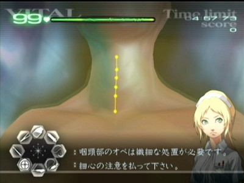

カドゥケウスZ 2つの超執刀 Any% Normal RTAガイド
RTAの前に
- オートセーブのON/OFFが可能なのでニューゲーム前にタイトル画面でOFFに設定する
- プロローグでエピソードセレクトスキップ（ESS）を行うとエピソード選択画面のチュートリアルのテキストがスキップできなくなるので利用しない
- チャプターZは開放されるたびにクリアするよりもチャプター5を終わらせてから開始したほうがほんの少しだけ早くなる
- チャプター5からチャプター1へ移動する場合は左端のサイドバーへポインタを乗せて十字キーの上を押しっぱなしにする
各種テクニック(手術)
ゼリーはピンポイントに置く
Zではニューブラッドと違ってゼリーを塗った際の周囲への浸透が遅く、切開時、人口膜、腫瘍痕などにゼリーを塗っても微妙にずれていた場合に即座にOK判定にならないようになっている。
いち早く浸透させる為にはゼリーを判定ポイントへ正確に置く必要がある。密集しているならゼリーを普通に塗っても大丈夫だが、散らばっている場合は塗らずにピンポイントに置くようにしよう。
エピソードセレクトスキップ(ESS)
カドゥケウスZには手術が無いエピソードが幾つか存在する。それらのエピソードではマップ画面の暗転後からエピソードタイトルが表示されるまでの間にESSを利用することができる。
また、下記エピソードはマップ画面無しですぐにエピソードタイトルが表示されるので、開始後すぐに(+)ボタンを連打してESSを利用しよう。
- 2-2 超執刀
- 3-1 入局の日
- 5-1 恐怖の予告状
- 6-1 招待状
切開
カドゥケウスZはゼリーの浸透が遅い為、浸透を待っていると切開に時間がかかってしまう。
そこで下記2通りの切開方法を利用していく
無消毒切開
ゼリー無しで切開する。ガイドラインから少し逸れただけでミスになってしまう。成功すれば0.4～0.6秒で切開できるので最速だがミスした場合は1秒程のロスとなる。
1-5のポリープ手術等、一部手術は切開のガイドラインが短めなので消毒無しでタイムを稼ぐチャンス。
Hint
何度か試したが十分な成功率を得られないと判断したので、著者はこのテクニックを使用していない。
半消毒切開
一度だけ一直線にゼリーを塗るが浸透を待たずにそのままメスで切る。
ゼリーが浸透したガイドポイントはミス判定がかなり緩くなるので浸透しなかったポイントにのみ注意して切開することになる。
慣れればミス率はかなり低く済む。所要時間は約1秒。
Info
各ステージ名末尾の ◆ は、手術終了後にエピソードセレクトスキップを行わずにそのままテキストを早送りすることを意味します
Chapter1
プロローグ
「この物語はフィクションです―――」の註釈が消えたらタイマースタート。初回起動時直後などはその後にNOW LOADINGが表示されてしまうことがあるので、不安ならタイマーを動作させず1度だけ「NEW GAME→エピソード画面からタイトルへ戻る」を行っておこう。
プロローグテキストが表示されてもESSを使用してはいけない。使用してしまうとエピソードセレクト画面でのスキップができなくなってしまうので(-)ボタンでテキストスキップのみ行おう。
エピソードセレクト画面に移ってチュートリアルテキストが表示されたらこれも(-)ボタンでスキップして1-1を開始しよう。
1-1 執刀の心得 ◆
裂傷を1つ縫合するとトーク待ちのために操作が中断されてしまうので注意しよう。
トーク待ちはゲーム全体を通して度々発生する。縫合の糸の操作や注射の最中などでも操作をキャンセルされてしまう。トーク待ちを忘れているとプレイのテンポを崩されてしまうので、念頭においてプレイしよう。
裂傷は左→右の順に縫合したほうが次のガラス片へのポインター距離が短くなる。タイム短縮にはほんの少しだけ影響する程度。
このステージだけゼリーで消毒してからテーピングをして手術終了となる。以降の全手術はゼリーを使わずに即テーピングを行おう。
閉創時のゼリーはAボタンを押しっぱなしにした状態で端から端まで数往復すればOKだが、まれに押しっぱなしにしているのにゼリーが途切れることがある。ゼリーを塗る際の音が切れたと思ったらAボタンを押し直そう。
1-2 続・執刀の心得 ◆
最初のバイタル注射は満タンまで充填（じゅうてん）してから打たないとやり直しになるので注意する。
腫瘍もエコー1回で確定させないと会話が入ってしまい、遅延してしまう。腫瘍の位置は完全に固定されているので、覚えてしまおう。
腫瘍摘出後は人工膜を乗せ、膜の中心にヒールゼリーを置こう。連打でも可。適当に塗るとOK判定が出るまで時間がかかってしまうので、丁寧に処理すること。
1-3 別れの手術 ◆
炎症はどちらも小サイズなので注射器1/4程度で2つとも処置可能。
腫瘍の位置は毎回固定。上部の2つはメスを一直線に走らせて一度に切り出すチャンス。成功すれば1～2秒のタイム短縮が望める。

腫瘍3つを切り出しておいて一気に3つ摘出するか、1つずつ摘出まで行うかはやりやすいほうで。
人工皮膚の設置
人工皮膚の設置判定はつままれている人工皮膚と切除痕が重なっているかどうかで判定される。ポインターと切除痕を重ねた位置で設置しようとするとミスになることがあるので、急いで設置するような場合は切除痕のやや上を目指してポインターを移動させるようにするとミスが少なくなる。
1-5 哀愁の歌うたい
切開のラインが短い直線なので無消毒で切開するチャンス。

ポリープの出現位置と個数は毎回固定。タイム短縮のコツは
- レーザーで複数のポリープを一度に焼く位置取りを素早く行う
- 焼却時間を体で覚えてレーザーをムダ打ちしないようにする
初期配置のポリープは画像の順番のとおりにレーザーで焼却しよう。そうすると血だまりが発生しても左下のポリープは血だまりの影響を受けずにレーザーで焼くことができるのでムダな器具切替えが発生しなくなる。

以降はポリープ群を処理する度に下記画像のとおりに次々とポリープ群が出現するのでルーペで事前にズームしておいて出現即ドレーンからレーザーで焼却しよう。


1-6 医師の資格
このステージではバイタルの減少が激しいので操作速度・精度に自信がない場合は開胸する前にバイタルを全回復させておこう。
まずは4つの腫瘍を摘出する。腫瘍は画像の矢印のとおりにメスを動かして露出させる。

炎症は注射器一杯に消炎剤を充填した場合、大2個または大1個小2個を除去することができる。
実際には9割程度の充填でも大丈夫だがミス打ちした際に充填した薬剤がほんの少し減少してしまう仕様のために足りなくなる事がある。不安なら毎回フル充填しよう。

すべての患部を処置したらエコーに切り替えてひたすらエコーを連打することでステージ終了。
1-8 生か、死か
カウンターショックが2回必要になるので一発で成功させないとタイムロスとなる。要練習。
カウンターショックは充電ゲージ上昇中よりも下降中のほうが緑エリアの判定が緩い気がした。少なくとも私はこれで成功率が跳ね上がったので、苦手な人は充電ゲージが右端に到達してからのタイミングでやってみるとうまくいくかもしれない。
開胸ラインはかなり短いのでこちらも無消毒チャレンジのチャンス。
心臓に刺さったガラス片を全て抜いてゼリーを塗る。ゼリーの有効判定が広いのかピンポイントに置かなくてもOKになりやすいように感じる。もちろんピンポイントに置いても良い。
再びカウンターショックの後に大型のガラス片が登場するので摘出と縫合を行って手術終了となる。
処理落ち
大型のガラス片が登場する際に左スティックで器具を選択してしまっているとなぜか処理落ちが発生してしまうことがあるので、ガラス片が動き終わるまでは左スティックに触らないようにしよう。
Chapter2
2-1 眠れる力
血栓の処理時にはエコー・ピンセット・メス・ドレーン・ゼリーを可能な限り早く行わなければならず、見た目に反してかなり忙しく、そして難しいステージ。特にドレーンはちゃんと判定が表示されるまで吸い切ること。そうしないままゼリーを使ってしまうと血栓が再び流れ出してエコーからやり直しとなってしまう。
血栓は出現順が完全に固定。下記画像のとおりの順番で処理し、最後の4と5は合流しそうな頃にピンセットで固定してまとめてドレーンで一気に処理しよう。

血栓の流れが早くなったらエコーで確定だけしておいて合流地点で止めて一箇所に集めよう。超執刀発動後にまとめて処理したら追加で現れた左上と下の2個を処理しよう。
2-3 神の手を目指して ◆
超執刀を5回発動すれば終わるステージ。発動毎にトーク待ちが発生するのでZボタンを押しっぱなしにしておいて星マークが見えたら超執刀を発動するようにしよう。
2-4 神の手の覚醒
動脈瘤（どうみゃくりゅう）は出現位置が毎回固定なので、ルーペによる術野移動を行う場合は毎回同じ場所でルーペを使用し、可能であれば動脈瘤が画面右寄りになるように位置取りをすると操作しやすくなる。
※参考用：ルーペ使用位置

ルーペ1回目
最初から見えている動脈瘤を手順通りに処理する。血管同士の吻合（ふんごう）については裂傷に見立てていつもどおりジグザグに縫うだけでOK。
ここで特殊進行条件が発生。動脈瘤を処理してもルーペでズームアウトしないと次の患部が出現しない。
ルーペ2回目
一度ルーペでズームアウトすれば約4秒後に次の動脈瘤が術野の中央やや左上に出現する。
ルーペでズームインしたら出現まで待機しよう。なお、事前に鎮静液を用意してもトーク待ちで注射が解除されてしまうので再度充填する必要が出てきてしまうので注意しよう。
ルーペ3回目
ルーペ2回目の動脈瘤を処理した約3秒後に術野右側に動脈瘤が2個出現する。ここではトーク待ちは発生しないので鎮静液を充填しておいて出現場所へポインターを合わせておこう。
動脈瘤を2個処理すると間を置かずに2個の動脈瘤が術野左上に出現する。画面内に収まるがかなり遠いのでルーペで移動して処理しやすい位置まで移動しても良い。
画面内に収めたまま処理するなら鎮静液1回で2個とも切除まで持っていくことが可能。このときに下 → 上の順番で収縮剤を投与すると1回の注射でどちらも切除可能にすることができる。下の動脈瘤の肥大化が上のものより若干早いので、逆の順番だと注射器1回で処理することができない。
4個同時
最後の4個同時に出現する動脈瘤は左右の2個が早めに破裂する個体となっている。あえて破裂させることで収縮剤の投与をしなくて済むので先に上下の2個を処置し、残りは破裂するまで待機しよう。
2-6 生きたくない。 ◆
裂傷と大裂傷の処置のみで終了。
大裂傷に初めてドレーンを使用した後と大裂傷2つ目の処置が完了した後にトーク待ちが入って操作が止まることに注意する。
2-9 生きたい。
 バイタル注意
バイタル注意
基本的な攻略はギルス攻略：キリアキを参照。
キリアキ初登場だが、以降に出現するステージとは異なりトーク待ちが発生してしまうせいでバイタルを回復する暇がほとんどない上に、トーク待ち中に潜伏したまま動いてしまうのでエコーによる特定が難しくなっている。不安な場合は切開前に十分に回復しておこう。
キリアキ1体目
出現と同時にトーク待ちが発生する。本来なら1体のみ出現なので裂傷の先端にエコーを当てれば特定できるが、トーク待ち中に移動してしまうのでこの方法は使えない。縫合はせずに裂傷の約2倍の長さの延長上（斜め方向に出現した場合はほぼ画面中央に戻っている）を意識してエコーで探そう。
1体目の処理が完了するとトーク待ちが発生する。そして数秒後に2体目が出現するので僅かな猶予時間の間にバイタル注射フル充填で一度回復しよう。
キリアキ2・3体目
2体目が裂傷を生成した1秒ほど後にトーク待ちが発生する。難しいがトーク待ち発生までの間にエコーによる特定だけでも済ませておきたい。
時間経過で3体目も出現するが裂傷生成方向は真上で完全に固定なので術野の上部にエコーを打つことで確実に特定できる。
マザー
耐久力は3と少ないがバイタルが20以上残っていない場合は事前に回復すること。
閉創
長いトーク待ちが終わっても器具が切り替えられるようになるまでさらに1秒ほど操作不可状態が続いている。いつもの調子で縫合しようとするとミス発生からのゲームオーバーになる可能性が高い。ふだんより多めに縫合するなどして対策しよう。
2-11 君のため、皆のため
心臓の切開時にメスを選択すると心停止が発生する。時間経過によるゼリーの浸透を狙ってゼリーを塗った直後にメスに変更するとムダがない。
切開後は6秒ほどで再度心停止が発生してしまうのでそれまでに弁の交換を終わらせよう。操作が間に合わなかったり安定しないようなら心臓を切開する前から超執刀を使おう。
入力キャンセル
切開完了後に心臓へ画面が移動した際にボタンの先行入力が一旦解除されてしまうので注意しよう。事前にAボタンを押しっぱなしにしていても入力を受け付けてくれないので、器具が使用可能になったのを確認してからちゃんとAボタンを押し直そう。
弁の切除
3段階の切除が必要。弁の外周をなぞるようにぐるぐるメスを回すのが理想的。
弁の交換
トレイに乗っている弁の右側の赤い枠部分にはピンセットのつかみ判定がないので注意する。制限時間が迫る中でつかめないと焦ってしまって余計にロスするので真ん中を確実につかもう。

弁と心房の縫合
弁は左から右へ縫合、心房は上から下へ縫合しよう。
Chapter3
3-2 ギルス ◆
基本的な攻略はギルス攻略：キリアキを参照。
術野が広いせいでキリアキが隅のほうまで移動する場合がある。縫合よりもキリアキの潜伏場所特定を優先しよう。見失った場合のタイムロスが痛い。
初期患部
裂傷と大裂傷が配置されている。全て治療した後に最初のキリアキが出現するまで2秒程猶予があるのでバイタル注射で回復しよう。
キリアキ1体目
1体のみの出現なので裂傷の先端を意識してエコーを当てることですぐに特定が可能。
キリアキ2体目・3体目
右側のキリアキは裂傷生成方向が真上で完全に固定なので術野の上部にエコーを打つことで確実に特定できる。まずは右側を特定してから左側のキリアキを特定しよう。
3-4 かけがえのない物
基本的な攻略はギルス攻略：デフテラを参照。
最初は1対、次は2対のデフテラを処理する。バイタルは継続なので余裕を見て回復しておこう。
3-6 最悪の患者
ネジは画像の通りに回そう。リモコンをひねる際にポインターが画面外まで飛んでしまうとひねっていない判定になるので最大限に注意すること。

ピンは画像の通りに移動させることで中央のゲージの移動量を最小化することができてゲージ移動の待ち時間を僅かながら短縮することができる。

この2箇所をクリアすると最大の難所であるパネル破壊パートが始まる。
ミス判定について
赤いパネルを除いた場合、パネルを剥がした空欄にレーザーを当てるとミスになってしまう。それ以外の空間ならパネルの隙間でも球体の外側でもミス判定にはならない。球体の内側にある赤い部分もミス判定にはならない。見た目だけのオブジェクトである。
つまり、パネルを剥がせば剥がすほどミス判定になるエリアがどんどん増加することになる。そして裏側からレーザーを当ててもミス判定になるのである程度剥がしてしまうとパネルの隙間ですら危険な領域となる。
そして2ミスでゲームオーバーとなってしまうのでパネル破壊には細心の注意が必要になる。
赤いパネルについて
赤く点滅するパネルは点滅を3回行ったあとに隣接するパネルへ移動して再び3回の点滅を行うのを繰り返す。隣接するパネルがない場合は同じパネルで再度3回の点滅を行う。心の中で点滅間隔をカウントしながら操作しよう。
パターン変化
パネルの枚数が少なくなると約3秒間全てのパネルの赤点滅が収まる。その後赤点滅パネルがランダムに出現するようになる。
点滅パターンも変化し、2秒間かけて赤点滅を行ってから3秒間完全に消灯するのを繰り返すようになる。
球体の端のパネル
残り少ないパネルは手前に回ってくるかどうかは運が絡む。場合によっては球体の端にギリギリ見えるパネルを破壊する必要もあるが、その場合はレーザーの当て方に注意しなければならない。
球体の内側ではなく外側からレーザーを当てよう。内側はほぼミス判定領域になってしまっているので外側からじわじわと当てることである程度安全にパネルを破壊することができる。
ただしパネルの表側が少しでも手前がわに来ていない場合は破壊できないので、手応えを感じない場合は即座にレーザーを打つのを止めよう。
パネル破壊後
超執刀を発動してコアを破壊して終了
3-8 高度3000mの奇跡（ハード） ◆
Warning
プレイ前に難易度をハードに変更すること
肺気胸の出現パターンは4種類の中からランダムに選ばれる。図の赤丸で囲った部分の4点をメスで切ることによってどのパターンか特定することが可能なので、パターンに応じた処理をしよう。
メスで特定する場合は4箇所を通る都合上どうしても運が絡むので、安定を取ってエコーで特定するのも悪くない。


3箇所の肺気胸を完全に処理しても、揺れが発生するまでは次の肺気胸は出現しないのでバイタル回復に努めよう。
肺気胸の1～3セット目まではどれだけ早く処理しても揺れ発生までの時間は約10秒で固定なので多少ミスしても構わないが、4セット目のみ処理完了と同時に閉胸に移行するので気をつけよう。
TIPS
揺れの発生までの時間は難易度が高いほど短くなるので、このステージだけハードモードでプレイするとタイムが短くなる。
3-10 許されざる研究
初期配置

基本的な攻略はギルス攻略：テタルティを参照。
テタルティ初登場。楔の数が少ないので一気に抜いて一気に剥がしてしおう。
Chapter4
4-2 血清を探せ！ ◆
Warning
途中でESSをしてしまうと1人目からやり直しになってしまう。また最後の手術後のテキストも短いのでESSSは終始行わないこと
マップ

画像の順番どおりに進めることで3種類のトリーティを重複することなく集めることができる。
トリーティ
トリーティは血清投与後にランダムな場所へ潜伏するので潜伏後即座にエコーを利用してメスを走らせよう。画面上に現れなくても場所が合っていれば切り出すことが可能だ。
ポインターの事前合わせ
ADVパート上ではポインターが表示されないので
- マップ画面表示
- ポインター表示待ち
- ポインターを動かして場所を選択
この[2]と[3]の時間がややロスになってしまう。
そこで手術終了時にあらかじめ次の目的地をポインティングしたままリモコンを固定しておいて、マップ表示と同時に選択すれば短いながらも短縮となる。
4-4 一人前
基本的な攻略はギルス攻略：トリーティを参照。
4-6 最初の一刀 ◆
メス・レーザー・ゼリー
最初の器具の使用指示は黒いモヤの上でポインターを動かさず、Aボタン押しっぱなしにした状態でスティックで器具を選び直すだけよい。
試薬投与1
指示通りに試薬を投与していく。4つ目の白の試薬を投与する段階でのみ時間経過でバイタルが減少してしまい、投与完了後にバイタルが80以下になっていた場合はバイタルを回復するように指示が入ってしまう。
4つ目の試薬を投与する段階でコアが潜伏してしまい、浮上するまでにバイタルを減らされるケースがよくあるので、3つ目の試薬を投与する段階でコアが潜伏しそうなら途中まで投与して一旦止めて、潜伏から浮上してきたら3つ目の試薬を投与し、即座に4つ目の試薬を投与しよう。
試薬投与2
試薬を連続投与するがこちらも投与1同様に潜伏されてしまってタイミングがズレて連続投与できずに時間切れで最初からになりやすいので、基本的に浮上してきたところに試薬2種を連続投与しよう。
また、試薬投与1からミスせず続けているとここらで注射器の耐久力が限界になる。どこかで潜伏・浮上を待つついでに耐久力を回復させよう。
4-7 新薬開発 ◆
パズル自体は簡単だがピースを置く際に隣のヘクスに置いてしまわないように注意する。

4-8 次なる一手 ◆
ペンプティコアへ試作血清を3回投与してからコアへレーザーを打ち込む、これを2セット繰り返すだけのステージ。
最後にコアをメスで切除して手術終了。徐々に生成される炎症等はすべて無視してしまって構わない。
4-9 新型レーザー開発
このステージから再びESSを利用するのを忘れないようにする。

4-10 医師達の戦い
基本的な攻略はギルス攻略：ペンプティを参照。
このステージでは最初の出現パターンは6回まで固定されている。
- 裂傷コア
- 腫瘍コア
- 回転コア
- 裂傷コア(コア浮上開始)
- 腫瘍コア
- 回転コア
- 以降ランダム
Chapter5
5-2 テロ発生！ ◆
一人目：キリアキ1体
1体のみの出現なので裂傷の先端へエコーを当ててすぐに特定しよう。
一人目：追加キリアキ2体
同じ方向に出現するような場合は同時に捕捉しやすい。キリアキの数は少ないのでマザー戦の前にバイタル回復は不要。
二人目：キリアキ2体
このキリアキに限らず術野が狭く出現位置が重なっている2体はほぼ同じタイミングで画面中央に戻って来るので2体同時捕捉を狙うことができる。
二人目：追加キリアキ3体
3体動時出現だが、左のキリアキは方向が真上固定、残りの2体は同じ位置から出現するので直前の2体と同様にタイミングを合わせることで3体動時捕捉を狙うことができる。バイタルがギリギリなはずなので回復しよう。
三人目：キリアキ2体
この2体も同じ位置から出現するが術野がやや左側に広いために画面中央に戻って来るタイミングがズレてしまうので同時にメスを入れるのが難しくなっている。1体ずつ確実に捕捉してメスを入れよう。
三人目：追加キリアキ2体
左のキリアキは方向が真上固定となっている。右側のキリアキも真上方向に出現する場合は同時にメスを入れることができる。
四人目：キリアキ2体
患部が狭い上に出現場所が2体とも同じなので同時捕捉を狙うことができる。
四人目：追加キリアキ2体
左下のキリアキは方向が真上固定となっている。右側のキリアキも真上方向に出現する場合は同時にメスを入れることができる。
五人目：キリアキ3体
3体同時出現で方向固定のキリアキがいない。2体は出現位置が同じなのでこの2体を同時捕捉しつつのこり1体を別途エコーで捕捉しよう。
五人目：追加キリアキ2体
2体の出現位置が同じなので同時捕捉を狙おう。バイタルがギリギリなはずなので回復を忘れないように。
5-3 進化するギルス ◆
基本的な攻略はギルス攻略：テタルティを参照。
初期配置

膜と楔の枚数が前回よりも増加している。一気に摘出できない場合は超執刀を使おう。
5-4 続・進化するギルス
基本的な攻略はギルス攻略：トリーティを参照。
トリーティの対処方法は前回とまったく同じだが、必要な血清の投与量がほんの少しだけ増えているので2度打ちして時間をロスしないように注意する。
5-6 カドゥケウス感染 ◆
パラスケヴィ初登場。このステージは術野が広く、パラスケヴィが端へ移動してしまってポインティングし辛くなり、結果的にタイムが遅くなりかねないので超執刀を使って一気に処理してしまおう。
分断したパラスケヴィすべてにメスを入れていって、摘出可能なサイズになった時点で超執刀を使う。
縫合を済ませたらある程度固まっているところをレーザーで動きを止めてピンセットで摘出してしまおう。
5-8 小さな悪魔
初期配置の裂傷をすべて縫合すると数秒後からサヴァト幼体が次々と出現するようになる。
超執刀を使うことによってレーザーでまとめて焼却しやすくなるので待ち時間の間に超執刀を発動しよう。
最後の2箇所のみ間を置かずに出現するので注意が必要。
5-9 その名は死 ◆
サヴァト初登場。基本的な攻略はギルス攻略：サヴァトを参照。
ChapterZ
Z-1 FROM USA
骨パズルステージ。

最初に回収する骨片は回収した順番どおりに後からピンセットで配置していくこととなる。可能なら毎回同じ順番で回収しよう。
骨片をあてはめる際にはリモコンを少しひねって角度を合わせなければならない。ひねる際にはポインターがずれるので設置時にミスがしないように気をつけよう。
最後の骨片は設置位置へポインターをぴったり合わせられるなら回転させずにそのまま設置することが可能。
Z-2 MAGIC
変異腫瘍ステージ。
腫瘍をまとめて摘出しないと復活する性質を持っている。
画面上の腫瘍すべてに対してドレーン→メス切除3回を行ってピンセットで摘出可能な状態にしてからまとめてピンセットで摘出する。
腫瘍がランダムに生成する小腫瘍はレーザーで焼却するとランダムで血だまりを発生させてしまう。
このステージではギミック上短縮可能な要素がほとんどないので下記の点が重要となる
- メス切断タイミングを体で覚えて無駄なく切除していく
- 4つ同時出現時はあらかじめポインタを合わせておくと少しだけドレーンが可能
- 腫瘍から出血しないように祈る
Z-3 CHASE
ペンライトの光源のみで手術するステージ。
開胸前
手術開始直後は使用可能な器具が制限されているが、ペンライトで患部を照らすことで患部に対応する器具が可能となる。そして1つでも患部を処置することですべての器具が使用できるようになる。

ペンライトは可能な限り動かさないのが理想なので、下記画像の場所を照らすようにしよう。
この位置であれば患部の処置を行うだけでなく、すべての患部の処置が完了した際に現れる切開ラインの端を目視することができるようになる。

肺下部
ズーム中に大裂傷とガラス片が見えるはずなので位置を脳裏に焼き付けつつ最初に処理しよう。
次に左上の裂傷を縫合するが、縫合中にペンライトアイコンとポインターが重なってしまうと縫合がキャンセルされてしまうので十分に注意すること。

肺上部
数秒後にライトが完全に消えてしまう。カメラのフラッシュは使わずに処置しよう。
処置の順番は自由だが、画面遷移中の左側に裂傷が見えるはずなので、まずは裂傷から処置したいところ。

Z-4 TRANSPLANT
臓器移植の過程でバイタルを大幅に減らされてしまうので、回復の手間を省くためにも腫瘍摘出後に超執刀を使おう。
収縮剤は動脈と静脈へそれぞれ注射器フル充填1.5回分ほど必要。注射する箇所はそれぞれの血管上ならどこでも大丈夫だが、薬剤瓶のやや上あたりの血管が細いながらもすぐ近くなのでタイム短縮につながる。
無事に収縮まで完了したらメスを入れて血だまりをドレーンで吸引しよう。血管同士の吻合（ふんごう）は縫合の判定がとても狭いので折り返しを多めにして縫おう。
Z-5 SAYONARA
キリアキ(強)とサヴァト(幼体)が出現する。キリアキ(強)はレーザー耐久力が1回分増加しているので注意すること。
キリアキ
初手からキリアキが3体出現する。3-2同様に術野が広いため、早めに特定しないと探すだけで時間を浪費してしまう。バイタルは後でどうにでもなるのでキリアキ出現後は即エコーで3体を特定して切り出そう。
全てのキリアキを処理して患部も治療すると幼体が出現して長いトーク待ちが発生する。
幼体
トーク待ちが終わったら超執刀を使おう。とりあえずはこの幼体を無視して次のキリアキに備えよう。
キリアキ+マザー
キリアキ2体の後にマザーキリアキが出現する。
マザー含む全てのキリアキを処理するとサヴァト(幼体)を捕獲するための薬剤が使用可能になる。最低でも1匹捕獲すればいいので1匹だけ捕まえて、他2匹はレーザーで焼却してしまおう。
なおレーザー焼却時は消滅エフェクトが長く、人工膜へのゼリー同様にその間は画面遷移等が行われない。レーザー処理は最初に行って、縫合や摘出は最後に行おう。
Chapter6
6-3 感染リスク
3度目のトリーティは出現時に色が見えない特殊仕様になっている。
出現時に色が見えないということは出現直後から血清を投与することができるということなので、このステージでは出現パターンを暗記することで大幅なタイム短縮が可能となっている。
パターンさえ覚えてしまえばあとは普通のトリーティだが、移動速度がとても早いので注射はよく狙って打たないと相当数のミスが発生してしまうので注意する。
6-4 CALLING ME
初期配置の裂傷を縫合したら超執刀を使用しよう。
最初はキリアキ2体とパラスケヴィ(最小)2体が出現する。パラスケヴィを摘出すると追加のキリアキ3体とパラスケヴィ(最小)2体が出現するのでパラスケヴィを摘出したら残ったキリアキ5体を一気に処置しよう。キリアキの密集程度でタイムがやや変動してしまう。
その後マザーキリアキとキリアキ、パラスケヴィ(耐久力2)が出現するのでこれらを処置すれば手術終了となる。
6-6 ギルスと 未来と
ペンプティ2回目。
各種コアを繰り出す間隔が短くなっている代わりにコアの耐久力がやや減少しているので慣れれば1回目より楽になる。
6-7 英雄たちの屈辱
1人目 テタルティ（担当：月森）
3人目のデフテラで超執刀を使いたいので可能な限り超執刀無しで突破したい。ただし楔を抜く過程でミスしてしまって余計に時間がかかりそうなら超執刀を使ってしまおう。
膜の枚数が多いので一度にすべて摘出するのは相当難しい。2回に分けて摘出しよう。
1.初期配置
緑の三角がテタルティの膜、丸が楔の位置、赤枠は術野境界（壁）でこの線の向こうにはテタルティは増殖しない

2.まずは右半分の膜5枚分の楔を全て抜く。黄色の丸が抜く楔を表す。

3.次に左半分は膜を剥がしても増殖しないように壁側を除いて2辺の上に楔が存在しないように抜く。今回の場合は2本だけで十分。

4.この状態になれば膜を剥がしても増殖しないので右側の膜を全て取り除く。

5.残る左側について楔がすべて生え揃ったら全ての楔を抜いて膜もそのまま摘出する。

これで手術完了となる。
2人目 キリアキ（担当：ミラ）
もちろん出現するのはキリアキ(強)だが、やることは「5-2 テロ発生」と変わらないので縫合を優先してバイタル回復回数を抑えよう。バイタル的にはかなりギリギリになるのでパラスケヴィに自信があるなら超執刀を使ったほうが安定する。マザーが出現する直前に発動するのが時間的にも無駄が少ない。
ここのキリアキのみ出現条件が特殊で、最初のキリアキ2匹を倒した(Defeat)時に追加の2体が現れる、となっている。通常は画面上の患部をすべて処理しないと次のキリアキが出現しないが、ここだけ特別になっている。
3人目 デフテラ（担当：月森）
最初の血だまりは同時にドレーンできる場所が3箇所存在する。右の2個については判定がかなりシビアなので無理をして同時吸引を狙う必要はない。
ここのデフテラは最初から2対が出現する上にランダムで血だまりが発生してしまう。デフテラの機嫌次第ではバイタルを0にされてもおかしくないので、同色融合が頻発して回復が追いつかなくなったような場合は迷わず超執刀を使って回復に努めよう。
4人目 パラスケヴィ（担当：ミラ）
基本的には「5-5 カドゥケウス感染」と一緒だが、1匹でも体内に潜られると即ゲームオーバーになってしまうので分割のしすぎには注意しよう。
超執刀を使えばバイタルの心配は無くなるが、超執刀のエフェクトのせいでパラスケヴィの視認が困難になるので使用はオススメしない。ミス無しで裂傷も長時間放置しなければバイタルは間に合うようになっているので落ち着いてプレイしよう。
術野が狭いおかげでパラスケヴィが広範囲に移動しづらくなっている。超執刀を使わなくても処理しやすいはず。
6-8 医神の最期
ラスボスサヴァト。基本的な攻略はギルス攻略：サヴァトを参照。
糸切断フェイズ
5-9同様に1Fメスを利用して糸を切断していくが、糸の耐久度が大幅に上昇している。それでもやることは変わらないので糸の耐久度ギリギリまでダメージを与えられるタイミングを体で覚えよう。無駄なくカットできれば追加の糸を発生させることなく全ての糸の切断が可能になっている。
VSサヴァト phase1 (月森)
ここからは月森とミラの2人で交互に手術するのでサヴァトへダメージを与えきった後に裂傷や幼体の後処理をする必要が無いため、レーザーの残量と相手の体力を見極めて裂傷も幼体も無視して一気にバリア消失まで持っていけるようにしたい。
VSサヴァト phase2 (ミラ)
ミラで手術中のみ超執刀を使用しても問題ないので一気にバイタルを回復するチャンスとなる。
裂傷を2・3個COOL判定で縫合するだけでバイタルが完全に回復するので、可能な限りバイタル全快の状態で次の段階へ移行したい。
VSサヴァト phase3 (月森)
サヴァトのバリアは最初にOKを出すまでが最も耐久力が高いので、ミラでバイタルを全快にしたのならバイタル回復は最小限にしてレーザーで攻撃しよう。
最後に血清を打つ際はバイタルが31以上になってるのを確認してから打ち、最後の超執刀を処理落ちしないように発動すれば手術終了となる。